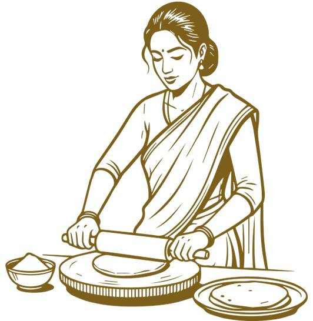

Welcome to Sharda Fresh Foods
Why choose us?
Advanced Manufacturing: Our products are made in a state-of-the-art, fully automated Turkish facility,
combining innovation with excellence.
Nutrient Preservation: Our specialized machines operate at an intentionally slow pace to retain the
natural protein, vitamins, and essential nutrients of the ingredients.
Premium Wheat Selection: We use carefully chosen wheat sourced from trusted regions. These high-quality
grains are stored in food-grade galvanized steel silos to preserve their wholesome goodness.
Enriched Blends: By blending the finest varieties of wheat, we ensure a superior and nutrient-rich
finished product.
Stringent Quality Checks: Our dedicated 24-hour laboratory, staffed with qualified technicians, performs
rigorous checks at every stage of production to guarantee top-tier quality
Traditional Taste: Using traditional chakkis, we deliver the authentic aroma and flavor of whole wheat
Chakki Atta, reminiscent of tradition and freshness.
Hygienic Processing: The entire production process is fully automated, eliminating any direct human
contact for utmost hygiene.
Lab-Tested Recipes: We prepare bread and roti in our lab to ensure optimal results when cooked by our
customers.
Safe Packaging: Final products are packed in 100% food-grade packaging materials, ensuring freshness and
safety.
Additive-Free: Our products contain no preservatives or additives, making them a pure and healthy choice
for your family

Journey of Excellence in Flour Milling
Under the visionary leadership of Mr. Pankaj Katiyar, the first group company, Tirupati Roller Flour Mills Pvt. Ltd., was established in 1987. What began as a modest operation with a production capacity of 60 MT per day has grown into a distinguished name in the flour milling industry. After modernizing with advanced technology from IMAS, a renowned Turkish brand, the facility now boasts a capacity of 240 MT per day. In 2022, the group expanded its operations with the launch of M/s Sharda Fresh Foods Pvt. Ltd., a state-of-the-art manufacturing unit. This new facility added a capacity of 240 MT per day for wheat flour and 100 MT per day for whole wheat Chakki Atta. The plant features cutting-edge machinery imported from global leaders like SELIS and Buhler, ensuring world-class production standards. Today, both units operate with ultra-modern equipment and hold prestigious certifications, including ISO 22000, ISO 9001:2008, and HACCP, underscoring their commitment to quality and safety. Under the continued guidance of Mr. Pankaj Katiyar, the next generation, led by Mr. Prakhar Katiyar, oversees operations at both facilities. Mr. Prakhar Katiyar has introduced innovative systems to monitor daily workflows, enhance efficiency, and ensure all processes align with the highest standards. Both plants are equipped with fully functional laboratories for thorough cleaning and quality testing, guaranteeing consistent excellence in every product. Mr. Prakhar Katiyar has also expanded the company’s clientele to include esteemed national and international brands such as ITC, Parle, and Britannia, among others. His commitment to meeting every aspect of customer needs ensures superior quality, health, taste, and purity, placing consumer satisfaction at the heart of the business. This legacy of dedication and innovation continues to drive the group forward, setting benchmarks in the flour milling industry. The one day when the lady met this fellow and they knew it was much more than a hunch the first mate and his Skipper too will do their comfortable.

Our Facts
- 15 Brands
- 20
Happy
Clients - 20 AWARDS
- 75 BRANCHES